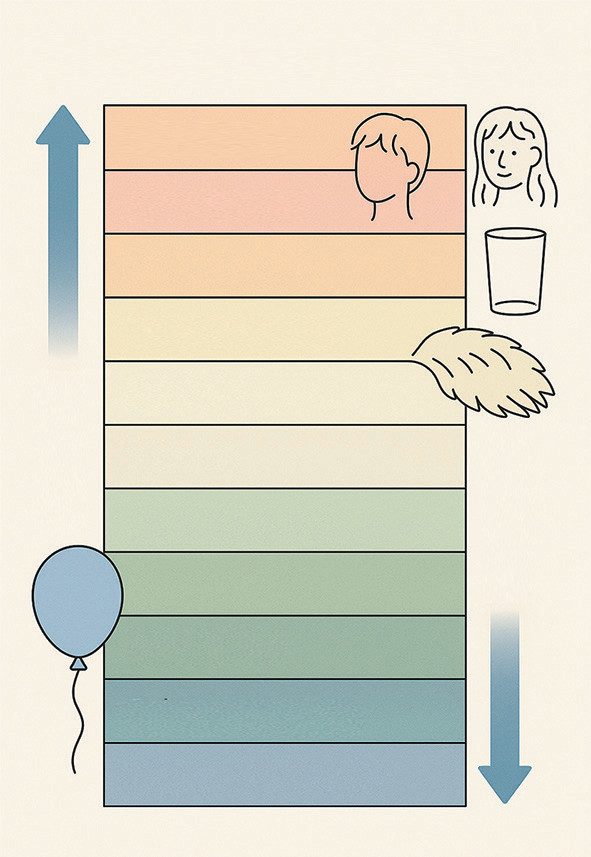

it to attract small bits of paper when brought close.
2. Rubbing a glass rod with silk: When a glass rod is rubbed with silk, the glass rod loses electrons and becomes positively charged, while the silk gains electrons and becomes negatively charged.
3. Wool Sweater and Human Skin: In colder months, when you take off a wool sweater, you may notice sparks or hear crackling sounds. This is due to the static electricity generated as electrons transfer from the wool to your skin.
The Role of insulators and conductors
Not all materials can be charged by friction. Only insulating materials can be effectively charged through this method because their electrons are not free to move. In contrast, conductors allow electrons to move freely, which means they cannot hold a static charge. Common insulating materials include rubber, glass, and plastic, while metals are good conductors.
Triboelectric series
The triboelectric series is a ranking of materials based on their propensity to gain or lose electrons through contact or friction. The position of a material in the series indicates whether it will tend to become positively or negatively charged when rubbed against another material (see Figure 1.11). Materials higher on the list tend to become positive, while those lower become negative. This effect is due to the transfer of electrons between the materials, leading to static electricity. The series is a useful tool for predicting the outcome of charge transfer in various scenarios.

When two materials from this series are rubbed together, the one higher in the series will lose electrons, while the one lower will gain electrons. For example, if you rub a glass rod with silk, the glass rod will lose electrons and become positively charged, while the silk will gain electrons and become negatively charged.
Charging an object by contact (conduction)
Charging by contact is achieved by bringing a charged body into contact with an uncharged one. Charges are transferred from the charged body to the uncharged